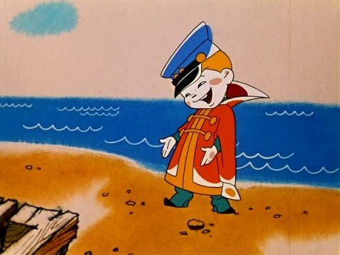

Фронтенд - ознайомлення
Цільова аудиторія моїх курсів
Цілеспрямовані молоді люди, що прагнуть працювати у сфері ІТ.
Поріг входження: володіння комп'ютером на хорошому рівні (вміння самостійно встановлювати програми, вирішувати проблеми зі своїм комп'ютером), посереднє знання англійської мови, вміння користуватися пошуком в інтернеті.
Для успішної кар'єри в програмуванні необхідна любов до математики, логіки, поваги до коду та своїх колег.
Для вивчення JavaScript потрібні базові знання HTML, CSS, веб-форм.
Для вивчення веб-графіки бажано дружити з тригонометрією, системами координат, математичними функціями, матрицями, фізикою.
На кого не розраховано курси:
- на зайнятих людей, що не можуть приділяти достатньо часу навчанню, виконанню домашніх завдань;
- на тих, хто приходить лише слухати лекції, не готовий задавати питання;
- на людей, які з комп'ютером "на Ви";
- на халтурщиків. 
Етапи створення сайту
Сучасні сайти створюють цілі команди спеціалістів різних галузей ІТ-технологій. Сьогодні існує дуже багато різних технологій, одна людина просто не в змозі охопити повністю всі знання та технології для створення сайту з нуля до самого кінця.
Створення сайту з нуля поділяється на такі основні етапи:
- Керування проектом - цим займається менеджер проекту, комунікабельна людина, що об’єднує команду і контролює виконання проекту на всіх ланках.
- Дизайн, інтерфейс сайту - створення дизайн-макетів сторінок сайту, шаблонів, варіантів поведінки користувачів, цим займаються веб-дизайнери та UI/UX-інженери.
- Фронтенд (frontend) - сукупність дій, в результаті яких макети сайта перетворюються на веб-сторінки, відображення веб-сторінок в браузері на стороні клієнта:
- порізка - вирізання з макету всіх необхідних декоративних елементів, фотографій і т.п.;
- верстка - створення моделі даних майбутніх веб-сторінок в форматі HTML;
- стилізація - візуальне оформлення моделі даних, щоб вона набула зовнішнього вигляду відповідно до дизайн-макетів;
- адаптація - пристосування інтерфейсу сайтів для відображення на різноманітних пристроях;
- скриптування - написання скриптів, підключення бібліотек для оживлення веб-сторінок динамічністю та спец-ефектами;
- оптимізація - валідація коду, створення спрайтів, стискання та керування порядком завантаження ресурсів;
- натягування на CMS - пристосування веб-сторінок до системи керування контентом (конструктора сайтів);
- js-розробка - створення компонентів, модулів з використанням бібліотек React, Ember, Angular, Vue і т.п.
- Бекенд (backend) - перенесення готових веб-сторінок на серверну частину:
- API - написання скриптів, модулів, ендпоінтів, компонент для взаємодії різних систем;
- бази данних - створення та налаштування необхідних баз даних для роботи проекту;
- хостинг - організація хостингу, що відповідає вимогам проекту, реєстрація доменних імен, налаштування серверів;
- Тестування (QA) - випробування проекту на навантаження, пошук помилок, недоліків, вразливостей.
- Впровадження, розкрутка (SEO, SMM, реклама, акції...).
- Обслуговування, наповнення контентом, модерування, актуалізація даних, модернізація.
Освіта, робота
Розгляньте переваги та недоліки навчання у ВУЗах/коледжах, на курсах та самоосвіти.
Дуже важливою ланкою у навчанні є спілкування з майбутніми колегами, обмін досвідом, накопичення соціального капіталу, формування груп для роботи на фрілансі, створення власних компаній.
Далі Боба розказує про перспективи кар'єри у веб-розробці (june, middle, senior), наводить орієнтовні терміни здобуття досвіду, технології та орієнтовні зарплати в Хмельницькому.
Після цього Боба розповідає про ніші у веб-розробці.
І про альтернативи: менеджмент, веб-дизайн, бекенд, QA, SEO, mobile-app...
Фронтенд - основа знань у веб-розробці
Всі спеціалісти веб-девелопмента (створення сайтів) повинні знати фронтенд-частину. Комусь це потрібно в більшій мірі, комусь вистачить основ.
Дизайн - кожен дизайнер повинен могти зверстати свої макети хоча-б на базовому рівні для того, щоб розуміти принципи формування елементів веб-сторінки.
Бекенд - спеціаліст по бекенду повинен перетворювати HTML-сторінки на шаблони для CMS, вносити деякі правки, фікси, тому він повинен знати HTML, CSS, JS на рівні не менше середнього.
SEO - спеціаліст по розкрутці сайтів повинен адаптувати веб-сторінки до вимог пошукових систем, він повинен досконало знати HTML, розуміти семантику HTML5, розбиратися у стилях.
Розробник мобільних додатків - інтерфейс додатків створюється або аналогічно веб-сторінкам, або на XML і має багато спільних рис з фронтенд-розробкою сайтів.
Фронтенд - спеціаліст по верстці, мусить знати всі тонкощі HTML, CSS, JS.
Навчання
Навчаємося щодня по 4-6 годин.
Навчання складається з:
- лекцій;
- консультацій;
- домашніх завдань;
- ознайомлення з додатковими матеріалами;
- проходження онлайн-курсів, виконання завдань;
- верстки проектів в портфоліо;
- виконання сторонніх проектів;
- дослідження ринку розробки на сайтах фріланса і виконання замовлень.
Якщо ви будете приділяти навчанню лише 4-6 годин в тиждень (відвідування лекцій) - вам курси нічого не дадуть, ви лише марно згаєте час та гроші, ви не зможете стати спеціалістами.
Оцінка знань, рейтинги
На кожного студента буде вестися табель: відвідування занять, консультацій, оцінювання його знань на основі здачі домашніх завдань.
Активні студенти знаходять собі додаткові проекти на стороні. Викладач може перевіряти їх та допомагати у виконанні. Власні проекти також оцінюються додатковими балами.
В кінці кожного курсу студентам що засвоїли матеріал буде вручено сертифікат про проходження курсу.
.Портфоліо
По закінченню навчання у вашому портфоліо повинно бути з десяток виконаних робіт: лендінги, багатосторінкові сайти, власні проекти.
Також вам потрібно буде підготувати CV (резюме), сторінку в LinkedIn.
З таким багажем вже можна йти на співбесіди та у фріланс.
Курс верстки
(3 місяця, ~30 занять, два на тиждень по дві години)
Введення, інструменти веб-розробника:
- вступ
- організація робочого простору
- Adobe Photoshop
- Git
- IDE
- пісочниці розробника
- хостинг
- веб-сервери
Верстка:
- HTML
- CSS
- семантика HTML5
- препроцесори, зборщики
- верстка е-мейлів
Форми:
- верстка веб-форм
- валідація полів форм
- відправка даних форм на сервер, e-mail
Адаптивна верстка:
- медіазапити
- адаптивна верстка
- сітки
- фреймворк bootstrap
CMS:
- знайомство з системами керування контентом, адмінками на прикладі блог-платформи Wordpress та інтернет-магазина OpenCart
- структура тем CMS
- створення власної теми оформлення
Курс JavaScript
(6 місяців, ~50 занять, два на тиждень по дві години)
Основи JavaScript:
- робота комп'ютера, алгоритми, введення в програмування
- змінні, структури даних
- обробка даних
- пошук помилок, відлагодження скриптів
- робота з елементами веб-сторінки
- обробка подій
Плагіни, бібліотеки:
- знайомство з попурярними плагінами (календарі, слайдери, слайдшоу і т.п.)
- практика: створення власних бібліотек, плагінів
- бібліотека для зручної роботи з елементами веб-сторінки jQuery
Асинхроний JS:
- паралельні потоки
- технологія Ajax
- формат даних JSON
- fetch, socket
- практика: створення власної соціальної мережі
Знайомство з React, Angular, Vue
Курс веб-графіки та анімації
(20-30 занять по 1 на тиждень)
- формат векторних зображень SVG
- анімація SVG
- робота з Canvas
- анімація Canvas
- практика: бізнес-графіка, ефекти та розваги
- WebGL, 3D-графіка
Менторство
Викладач стає вашим ментором на найближчі пару років, поки ви не досягнете такого рівня, що не потребуватимете постійних консультацій.
Завжди можете звертатися з питаннями до викладача по вайберу, телеграму, скайпу, в соц-мережах чи приходити на консультації, і якщо викладач має змогу - з радістю допоможе.
Перед кожною лекцією та після лекції студенти можуть отримати консультацію у викладача по пройденому матеріалу, домашнім завданням, власним проектам чи будь-яким іншим питанням.
На лекції розглядається теорія та виконуються прості практичні завдання.
В кінці заняття є контрольні питання, тести, домашні завдання.
Домашні завдання є обов'язковими для засвоєння матеріалу.
Деякі теми вам будуть даватися на самоопрацювання.
На час менторства всі консультації для наших студентів є повністю безкоштовними.
Сторонні особи можуть отримати безкоштовні короткі консультації (5-10 хв.) очно чи дистанційно.
Коворкінг
Для своїх студентів Circle Academy надає безкоштовний коворкінг з 10:00 до 19:00 (для колективної роботи або якщо немає змоги займатися дома).
Комунікація
Для комунікації будуть створені групи у Viber.
Всі питання (окрім особистих) задавайте у групі: іншим студентам, можливо, також буде цікаво, або вони можуть відповісти швидше за викладача, щось порадити.
Скидайте у групу посилання на свої роботи, проекти щоб їх перевірити.
Діліться посиланнями на цікаві статті, ресурси.
Код краще вставляти у jsfiddle чи codepen і давати посилання, в месенжерах немає нормального форматування, підсвітки синтаксису, строки занадто короткі.
Навички фронтенд-розробника для здобуття хорошої роботи
Робота з графічним редактором Adobe Photoshop, Adobe Illustrator, Sketch, Avocode.
Системи Git, менеджери задач / проектів.
Дані: HTML, XHTML, XML, JSON, бази даних.
Стилі: CSS, LESS/SASS/Stylus.
Різноманітні фреймворки, CMS.
Скрипти: JavaScript, jQuery, Angular, React, Ember, Vue, CoffeeScript, TypeScript...
Node.js, модулі, зборщики
Основи php, структура проекту, тем оформлення.
Домашнє завдання
Створіть у google.document резюме, скопіювавши та змінивши інформацію з приклада.
Виконайте вказані у файлі завдання.
Орієнтовний розмір фото: 120х160, лише обличчя, в фас, без сонцезахисних окулярів.
Невірно виконані резюме, завдання не будуть прийматися.